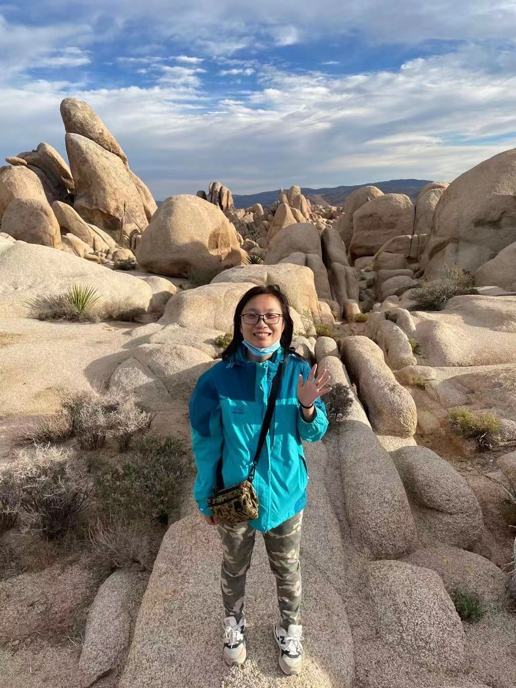
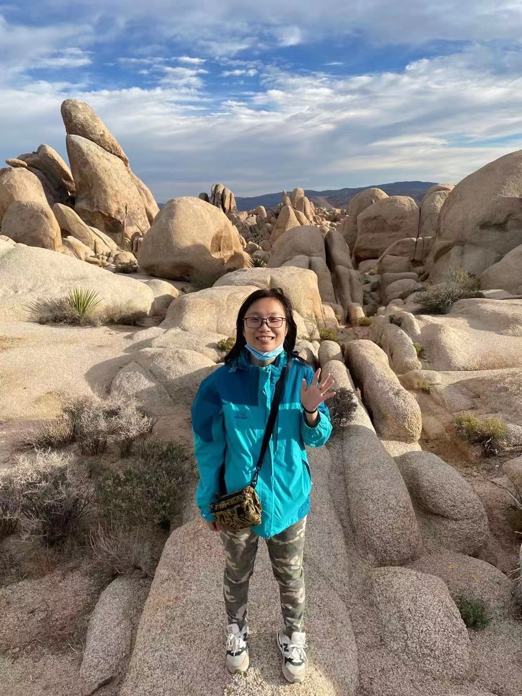

About myself
People, research, and life.
 

Hi there, I am a PhD candidate of Geography at University of California, Santa Barbara, currently working with Dr. Amy Frazier and Dr. Peter Kedron. I was an affiliated member at Dr. Leah Gerber's Conservation Innovation Lab from which I've learned so much! I hold a master's degree in urban spatial analytics from Weitzman School of Design at University of Pennsylvania, and a B.S. in resources and environmental science from the Faculty of Geographical Sciences at Beijing Normal University. While I was in China, I've done internships in different areas, including remote sensing, big data analytics for urban planning, and conservation. Check out more details about my previous experiences through my CV here.
Ongoing research include: 1) connectivity analysis on Protected Areas and in 3D; 2) assessing Protected Area and OECM effectiveness for conservation planning; 3) citizen science data for biodiversity. I am also interested in linking ecological processes with metrics and their application in management or decision-making. I am currently developing a dissertation prospectus with more details to come! This is the link to some of my previous projects. If you are doing research in a similar direction, share the same research interests, or just want to show me an interesting work, you are welcome to contact me via email, GitHub, or twitter.
I grew up in Beijing, China, spent half a year in Osaka, Japan, a year in Philadelphia, Pennsylvania, three years in Tempe, Arizona, and now I'm based in Santa Barbara, California. I am particularly fond of cities with waterways running through, like the Schuykill River in Philly and the Kamo River in Kyoto, although my favorite city will always be my hometown, Beijing.
My career goal is to work in academia and engage closely with NGOs to promote conservation and the use of geospatial technologies for the greater good.